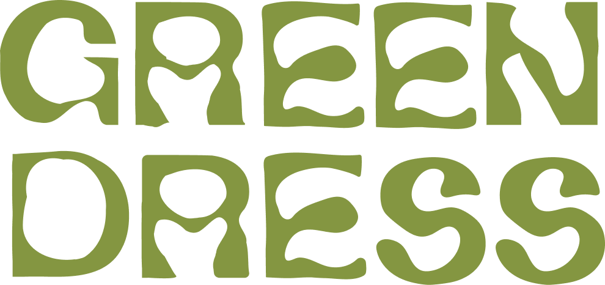
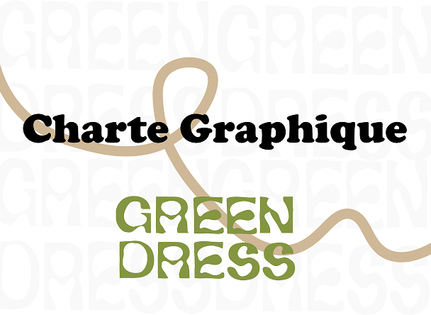
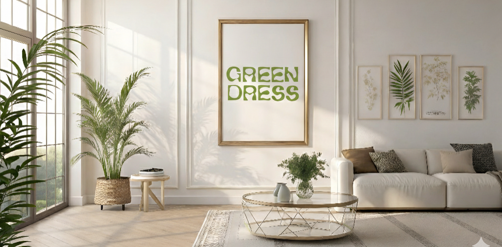
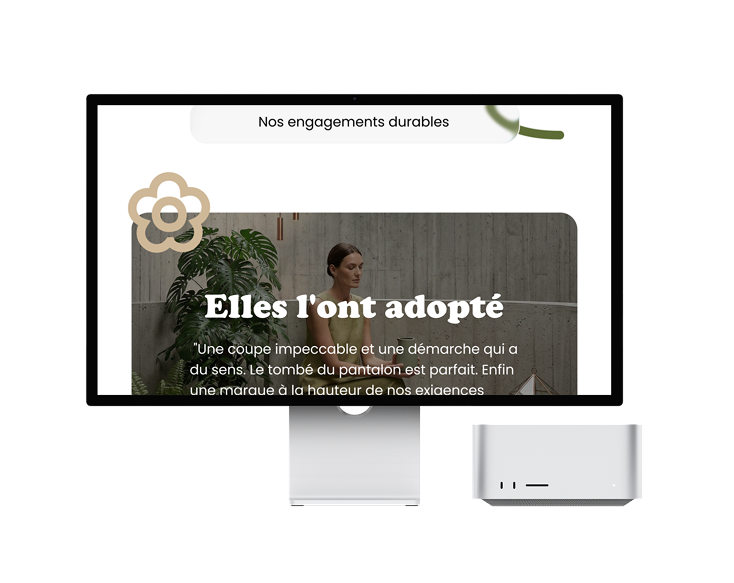
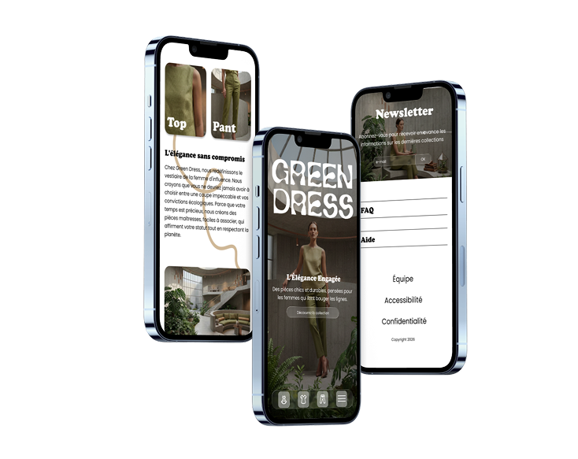
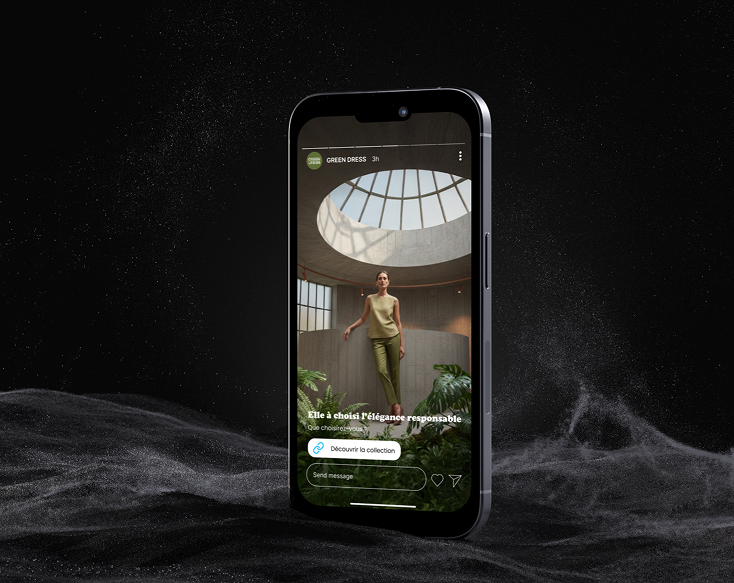
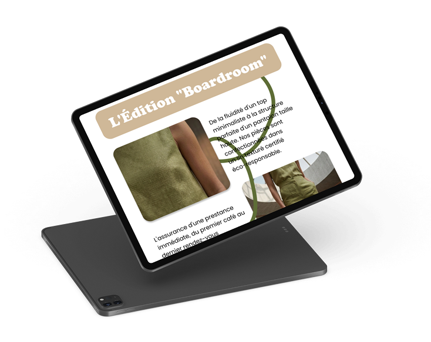

Dans le cadre d'un module dédié au design graphique et digital, j'ai conçu une charte graphique complète incluant la création du logotype, l'élaboration d'une palette chromatique, le choix typographique ainsi que la définition des codes visuels (gimmicks et interdits).
Afin d'éprouver la pertinence de cette identité, j'ai poussé la réflexion au-delà du brief initial en réalisant une série de déclinaisons print et web : affiches, flyers, newsletters et contenus réseaux sociaux (stories). Le projet s'est conclu par la conception d'une maquette mobile (UI), garantissant ainsi une expérience utilisateur cohérente et une harmonie visuelle sur l'ensemble des points de contact.

Ce projet s'est construit autour de contraintes spécifiques liées au positionnement de marque. À partir d'un univers imposé et d'un ciblage démographique précis (cœur de cible), j'ai défini une stratégie visuelle cohérente et différenciante.
L'une des composantes majeures du workshop fut l'intégration de l'intelligence artificielle dans le processus de création. Afin de garantir une parfaite adéquation avec la charte graphique, j'ai élaboré des prompts complexes au format JSON. Cette approche structurée a permis de générer des visuels photoréalistes sur-mesure, respectant scrupuleusement la direction artistique et les codes esthétiques de l'univers défini.




